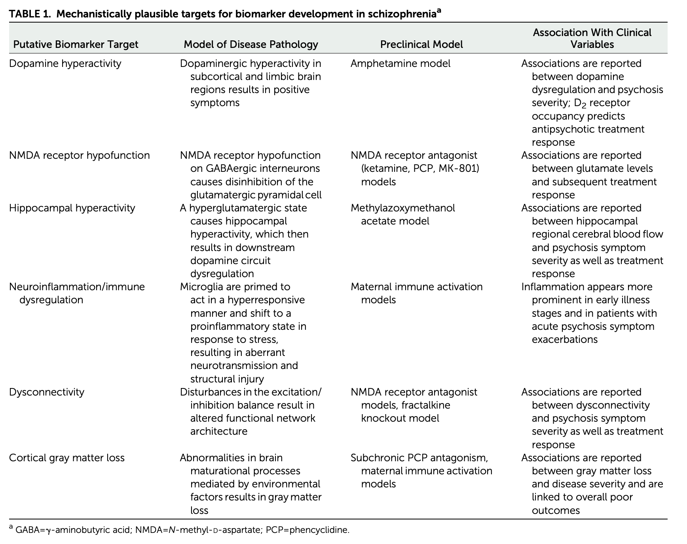
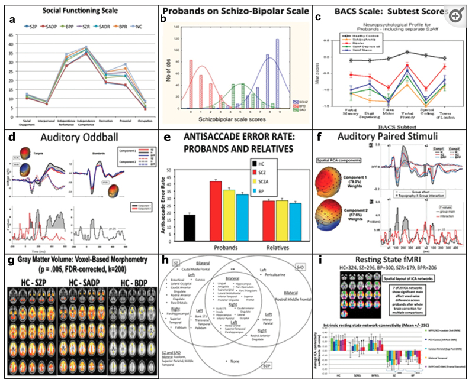

Schizophrenia
Overview
Review of VR as therapy for Schizophrenia in (Bisso et al., 2020).
- Lifetime prevalence ~ 0.3-0.7%
- Broader definitions suggest 2-3 or 3-5%
- ~1/3 chronic & severe
- Onset post-puberty, early adulthood
- Males: Earlier onset & greater severity
- Pervasive disturbance in mood, thinking, movement, action, memory, perception
- Increased (early) mortality
Symptoms
“Positive” symptoms
- “Additions” to behavior
- Disordered thought
- Delusions of grandeur, persecution
- Hallucinations (usually auditory)
- Bizarre behavior
“Negative” symptoms
- “Reductions” in behavior
- Poverty of speech
- Flat affect
- Social withdrawal
- Anhedonia (loss of pleasure)
- Catatonia (reduced movement)
Cognitive symptoms
- Memory
- Attention
- Planning, decision-making
- Social cognition
- Movement
Affective dysregulation
- Depressive, manic states


Biological bases
- Genetic predisposition
- Brain abnormalities
- Neurochemical factors
- Developmental origins
Genetic predisposition

- Heritability 80%
- vs. 60% for osteoarthritis
- 30-50% for hypertension
- (Os & Kapur, 2009)
- But, no single gene…(Johnson et al., 2017)
- NOTCH4, TNF:
- Part of major histocompatibility complex (MHC), cell membrane specializations involved in the immune system
- DRD2 (dopamine D2 receptor), KCNN3 (Ca+ activated K+ channel), GRM3 (metabotropic glutamate receptor)
- NOTCH4, TNF:

Brain abnormalities
Ventricles larger, esp in males

- Ventricular enlargement increases across time
- Especially in the more impaired


- Enlargement precedes diagnosis?
- Like trajectories B or F

Hippocampus, amygdala, thalamus, nucleus accumbens (NAc; ventral striatum) smaller
- Related to ventricular enlargement?
- Early disturbance in brain development?

Animal model example
- Dentate gyrus (DG) in hippocampus
- spatial coding, learning & memory, emotion processing
- DG dysfunction implicated in schizophrenia
- Gene linked to schizophrenia, Transmembrane protein 108 (Tmem108) enriched in DG granule neurons
- Tmem108 expression increased during postnatal period critical for DG development
- Tmem108-deficient neurons form fewer and smaller spines
- Tmem108-deficient mice display schizophrenia-relevant behavioral deficits
- (Jiao et al., 2017)
White matter disruption

- White matter loss over age

- But disruptions heterogenous across individuals (Lv et al., 2021)
Compared to the healthy comparison group, the schizophrenia group showed widespread reductions in FA and CT, involving virtually all white matter tracts and cortical regions. Paradoxically, however, no more than 15–20% of patients deviated from the normative range for any single tract or region. Furthermore, 79% of patients showed infra-normal deviations for at least one locus (healthy individuals: 59 ± 2%, p < 0.001). Thus, while infra-normal deviations were common among patients, their anatomical loci were highly inconsistent between individuals. (Lv et al., 2021)
Disconnectivity in cortical networks

- But connectivity findings inconsistent (Fornito & Bullmore, 2015)
- Reduced structural connectivity vs.
- Synaptic, dendritic, axonal connections b/w regions
- Usually measured via DTI or related diffusion-based MRI technique
- Increased functional connectivity
- BOLD, EEG, or MEG covariance
- Task-free ‘resting’ state or task-based

- Global signal (cortical gray matter BOLD signal CGm) variations?


- Disconnectivity b/w ‘hubs’ -> higher functional connectivity overall

Comparing neural measures


Interestingly, at present most modalities perform similarly in the classification of psychosis, with slight advantages for rs-FC relative to structural modalities in some specific cases. Notably, results differed substantially across studies, with suggestions of biased effect sizes, particularly highlighting the need for more studies using external prediction and large sample sizes. (Porter et al., 2023)
Neurochemical factors
Dopamine hypothesis

Evidence for…
- DA (\(D_2\) receptor) antagonists (e.g. chlorpromazine)
- improve positive symptoms
- Typical antipsychotics are DA \(D_2\) antagonists
- DA agonists
- amphetamine, cocaine, L-DOPA
- mimic or exacerbate symptoms
Evidence against…
- New, atypical antipsychotics
- (e.g. Clozapine) INCREASE DA in frontal cortex, affect 5-HT
- Mixed evidence for high DA metabolite levels in CSF
- Some DA neurons may release 5-HT, cannabinoids, glutamate (Seutin, 2005)
Glutamate/ketamine hypothesis
- Psychomimetic drugs induce schizophrenia-like states
- Phencyclidine (PCP), ketamine
- NMDA-R (receptor) antagonists
- Ketamine
- dissociative (secondary) anesthetic
- side effects include hallucinations, blurred vision, delirium, floating sensations, vivid dreams
- binds to serotonin (\(5HT_{2a}\)) receptor, \(\kappa\) opioid receptor, and \(\sigma\) receptor “chaperone”
- may be dopamine \(D_2\) receptor antagonist
- Schizophrenia \(\rightarrow\) underactivation of NMDA receptors?
- NMDA receptor role in learning, plasticity
- DG neurons in (Jiao et al., 2017) were glutamate-releasing.
- NMDA-R antagonists -> neurodegeneration, excitotoxicity, & apoptosis
Developmental origins
Rapid gray matter loss in adolescents?

Early life stress
- 2x greater odds for children in urban environments
- Higher risk among migrant populations (Cantor-Graae & Selten, 2005)
- Exposure to infection in utero, other birth complications
- Exposure to cannibis
- Paternal age > 40
Complex pathways
- (Levine, Levav, Pugachova, Yoffe, & Becher, 2016)
- Children (N=51,233) of parents who born during Nazi era (1922-1945)
- Emigrated before (indirect exposure) or after (direct exposure) to Nazi era
- Children exposed to direct stress of Nazi era in utero or postnatally
- Did not differ in rates of schizophrenia, but
- Had higher rehospitalization rates
- (Debost et al., 2015)
- Danish cohort (n=1,141,447)
- Exposure to early life stress
- in utero did not increase risk of schizophrenia, but
- during 0-2 years increased risk
- Increased risk associated with an allele of a cortisol-related gene
Summing up
- Wide-ranging disturbance of mood, thought, action, perception
- Broad changes in brain structure, function, chemistry, development
Dopamine hypothesis giving way toglutamate hypothesis- Genetic (polygenic = multiple genes) risk + environmental factors
Prospects
Outcomes following hospitalization

Biomarkers

Novel therapies
- Virtual Reality Assisted therapy (Bisso et al., 2020; Dellazizzo, Potvin, Phraxayavong, & Dumais, 2021)
Short-term findings showed that both interventions produced significant improvements in AVH severity and depressive symptoms. Although results did not show a statistically significant superiority of VRT over CBT for AVH, VRT did achieve larger effects particularly on overall AVH (d = 1.080 for VRT and d = 0.555 for CBT). Furthermore, results suggested a superiority of VRT over CBT on affective symptoms. VRT also showed significant results on persecutory beliefs and quality of life. Effects were maintained up to the 1-year follow-up. VRT highlights the future of patient-tailored approaches that may show benefits over generic CBT for voices. A fully powered single-blind randomized controlled trial comparing VRT to CBT is underway. (Dellazizzo et al., 2021)
AI and Machine Learning
- Deep Neural Network used to identify functional brain signatures in a genetic disorder (DiGeorge syndrome; 22q11.2 deletion syndrome) linked to psychotic symptoms (Supekar et al., 2024)
The future of psychiatric research
- The Research Domain Criteria (RDoC) Project
- Negative valence, positive valence, cognitive systems, social processes, arousal/regulatory systems
- U.K. Biobank
- Enhancing Neuro Imaging Genetics through Meta Analysis (ENIGMA) Consortium
- Bipolar and Schizophrenia Network for Intermediate Phenotypes (BSNIP Project) (Tamminga et al., 2014). Data shared NIH Data Archive.
